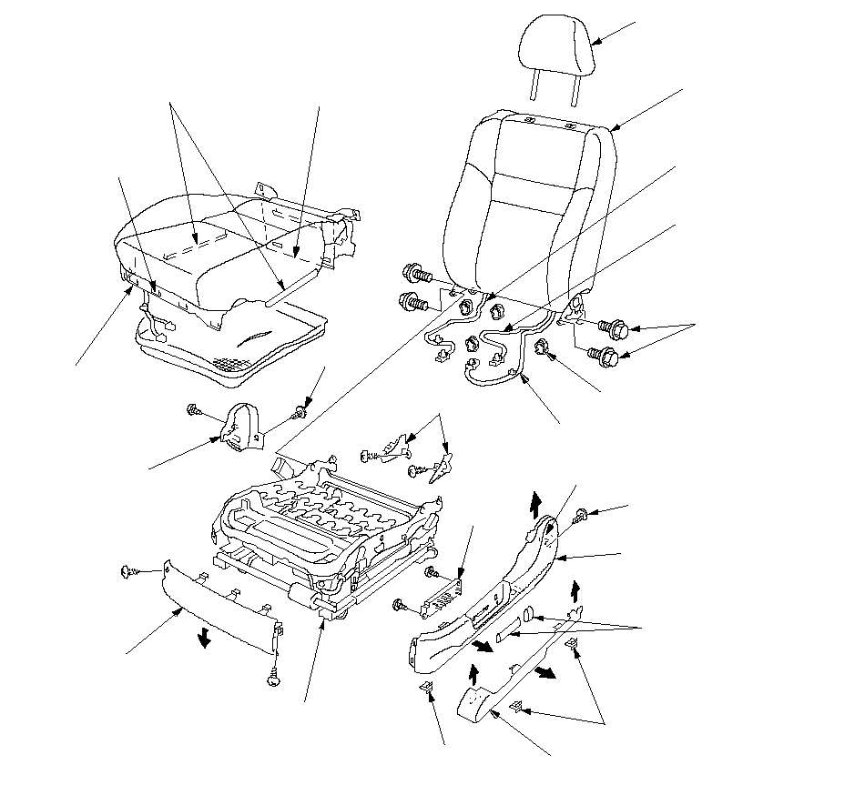

Front Seat Disassembly/Reassembly - 8-way Power
For some models: SRS components are located in this area.
Review the SRS component locations LHD,
SRS component location RHD
and
the precautions and procedures
before performing repairs or service.
NOTE:
Take care not to tear the seams or damage the seat covers.
Put on gloves to protect your hands.
When prying components, use the handy remover set or equivalent.
Apply multipurpose grease to the moving portion of the seat track.
To prevent wrinkles in the seat cushion cover, stretch the material evenly over the pad before securing the clips, hooks, and hook strips.
